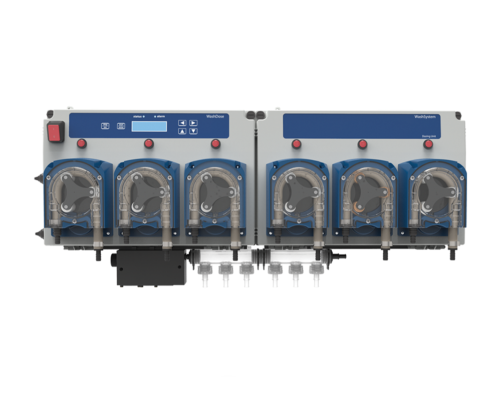

Ficha técnica
por producto
Soluciones para Unidades Médicas
Protocolos de limpieza y desinfección
Protocolos de limpieza y desinfección
para entornos donde el control no es opcional.
Desinfectantes certificados · Sanitizantes · Lavandería · Dosificación automática · Fichas técnicas
Cobertura completa para cada área clínica
01 · PortafolioÁrea 01Desinfección y sanitización
- BEIZUM® — desinfectante de alto nivel (cuaternario)
- Antiseptik — desinfectante multiusos institucional
- BEIZUM® Gel — antibacterial 70% etanol
- BEIZUM® Plus 20% — alta concentración
- Sanitizante de superficies de contacto
Aviso COFEPRIS y HDS disponibles.
Área 02Limpieza general y pisos
- Multiusos para áreas clínicas
- Limpiador de pisos institucional
- Desengrasante para áreas de servicio
- Limpiador de baños y sanitarios
- SEKOProMax · dilución exacta en pared
Área 03Lavandería institucional
- Detergente para lavandería hospitalaria
- Blanqueador sin cloro para blancos clínicos
- Suavizante y neutralizador de telas
- Detergente enzimático — manchas orgánicas
- SEKOWashBasic / WashDose Peri
Área 04Higiene de manos y consumibles
- Jabón antibacterial para lavado clínico
- Gel antibacterial — dispensador de entrada
- Toalla interdoblada y papel higiénico
- Bolsas diferenciadas (rojo / negro)
- Guantes de látex y nitrilo
- SEKOProMini · dispensador compacto
Dosificación automática — sin error, sin desperdicio.
En entornos de salud, la concentración correcta no es negociable. Los sistemas SEKO la garantizan.

SEKO ProMax
Pisos · sanitarios · superficies
Dispensador de pared para hasta 4 químicos a dilución exacta programada. Personal solo abre la llave — sin manipular concentrados.
Dilución exacta4 productosSin error

SEKO ProMini
Lavabos · entradas · puntos de higiene
Dispensador compacto de pared para jabón antibacterial o gel. Ideal para baños, entradas y consultorios. Bajo mantenimiento.
Higiene de manosCompactoBajo costo/dosis

SEKO WashDose Peri
Lavandería institucional
Dosificación automática de detergente, blanqueador y suavizante por ciclo. Control preciso por carga, compatible con lavadoras extractoras.
LavanderíaPor cicloTrazable
Equipo instalado y calibrado por Neugreen. Garantía de desempeño. Soporte técnico en campo.
Documentación disponible para cada producto
03 · CumplimientoHoja de datos
de seguridad (HDS)
de seguridad (HDS)
Aviso COFEPRIS
en productos aplicables
en productos aplicables
Soporte técnico
para protocolo de uso
para protocolo de uso
Toda la documentación técnica se entrega junto con el pedido o por correo a solicitud. Sin trámites adicionales.
BEIZUM® certificado
Desinfectantes con aviso COFEPRIS
Dosificación SEKO
Concentración exacta, sin error
Documentación incluida
Ficha técnica y HDS en cada entrega